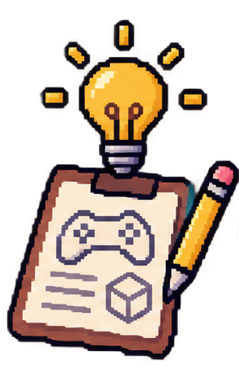

01
Preproducción
Es el punto de partida de todo videojuego. En esta etapa nace la idea principal y se define qué tipo de experiencia se quiere ofrecer a los jugadores. Se determina el género, la temática, el público al que estará dirigido, la historia y las características principales del proyecto.
También se estudia la viabilidad de la idea, se establece un presupuesto aproximado y se organiza el equipo de trabajo. Se planifican los recursos necesarios, el tiempo de desarrollo y los objetivos que se desean alcanzar. Una buena planificación permite reducir problemas y mantener una dirección clara durante las siguientes etapas.
